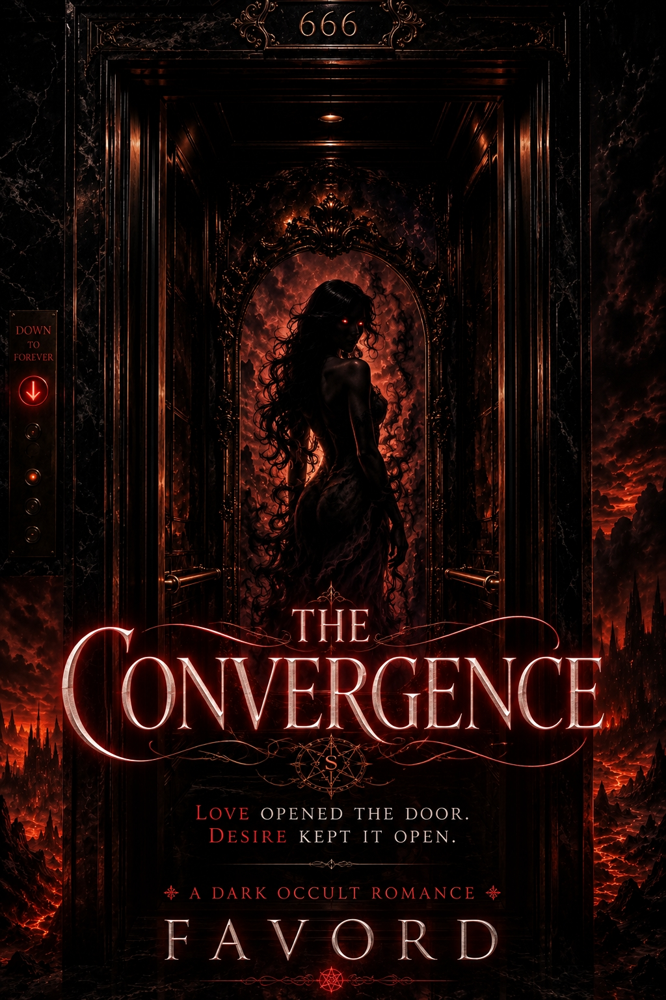
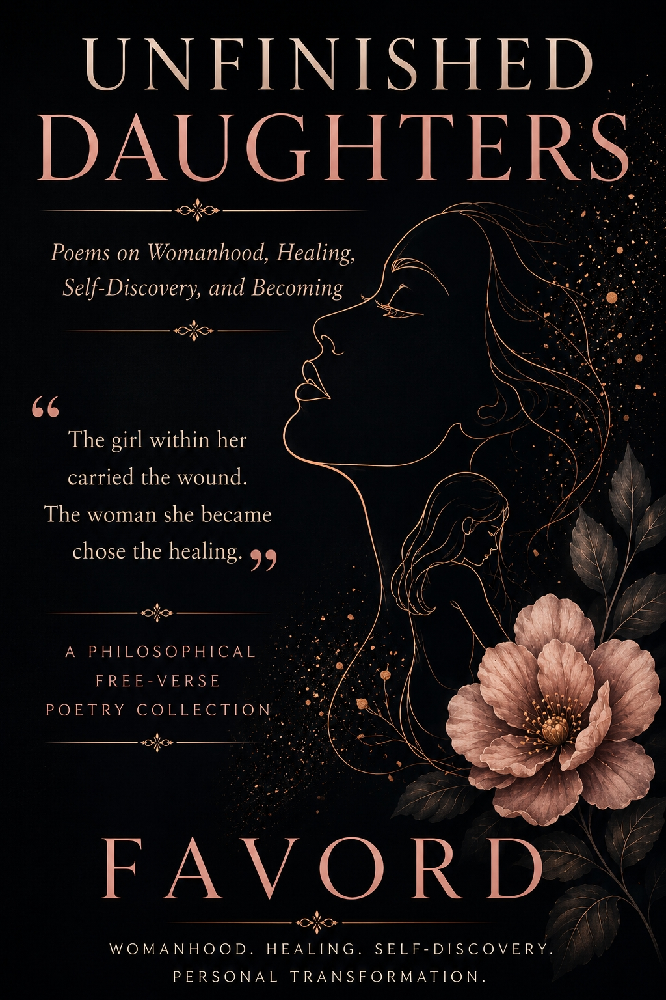

Books
Published works by Favord — novels, poetry, emotional horror, dark romance, grief, healing, and worlds meant to be felt.
Novels
Available Now
The Convergence

A dark occult romance where loneliness opens the door, desire keeps it open, and love becomes the most dangerous ritual of all.
Read on AmazonAvailable Now
The Place We Go When We Sleep

A psychological and emotional horror novel about grief, marriage, dreams, alternate realities, and the places we escape to when waking life becomes unbearable.
Read on AmazonPoetry
Available Now
Unfinished Daughters

A poetry collection for women exploring girlhood, womanhood, motherhood, emotional wounds, self-reflection, accountability, healing, identity, and becoming whole.
Read on Amazon